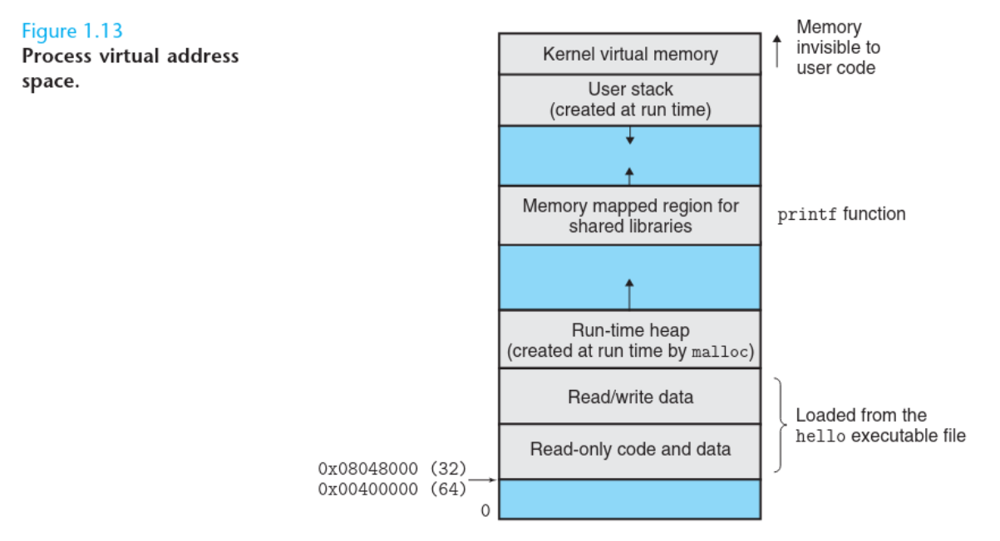

1.8 Virtual Memory
Virtual Memory is an abstraction that provides each process with the illusion that it has
exclusive
use of the main memory.
Each process has the same uniform view of memory, which is known as its Virtual Address Space —
a kind of
a private view of memory. This is not the actual physical memory, but a
mapped layout that the process thinks is its memory.

How does Virtual Memory work?
- Each process gets its own virtual address space that is independent of the
actual physical memory.
- The operating system (with help from the CPU's Memory Management Unit, or MMU)
maps virtual addresses to physical addresses.
- So when Process A thinks it's reading from
0x00400000, and Process B also thinks it's reading
from
0x00400000, they are actually reading from different places in the physical
RAM.
The OS sets up page tables that say:
- "When Process A accesses virtual address
0x00400000, translate it to physical
address 0x12345000."
- "When Process B accesses virtual address
0x00400000, translate it to physical
address 0xABCDF000."
Looking briefly at each memory space:
- Read-only code and data: executable machine code and read-only constants. This part
contains
the compiled program instructions and the constants initialized inside of it.
- Read/Write Data: contains global static variables with initial values, and it’s both
readable
and writable.
- Run-time Heap: created by functions like
malloc() and it grows
upwards (towards the higher addresses). It exists as long as the program runs or until
manually
freed.
- Memory Mapped Region for Shared Libraries: contains shared libraries (like
libc.so
which contains functions like printf), and it’s shared between processes.
- Stack: at the top of the user’s virtual address space is the user stack that the compiler
uses
to implement function calls. Like the heap, the user stack expands and contracts dynamically during the
execution
of the program. In particular, each time we call a function, the stack grows. Each time we return from a
function,
it contracts. Note that the stack grows downwards.
- Kernel virtual memory: the kernel is the part of the operating system that is always
resident
in memory. The top region of the address space is reserved for the kernel. Application programs are not
allowed
to read or write the contents of this area or to directly call functions defined in the kernel code.
Previous
Next